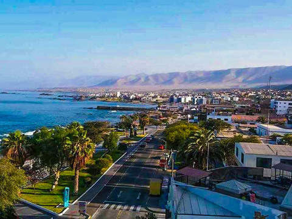
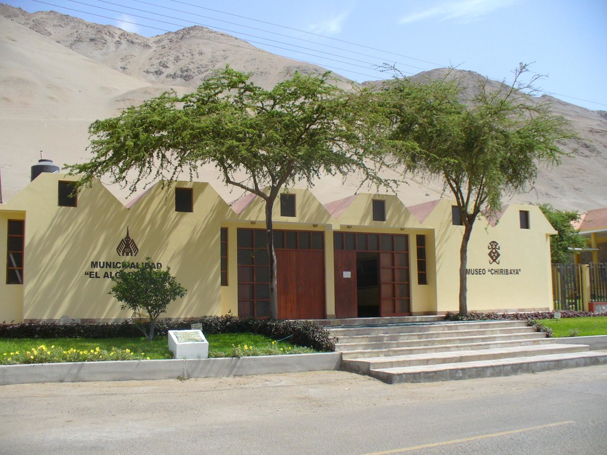
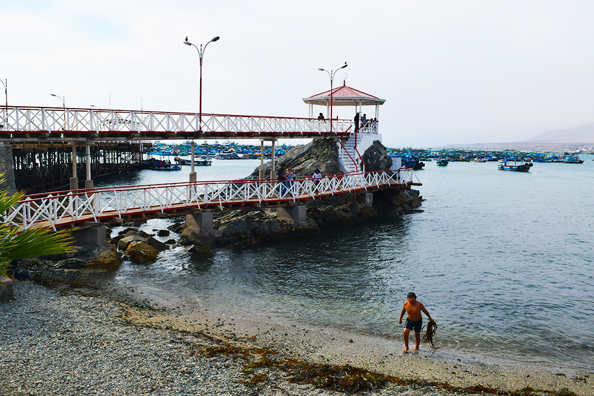

La provincia de Ilo es una de las tres que conforman el departamento de Moquegua en el Sur del Perú. Limita por el Norte con la provincia de Mariscal Nieto; por el Este con la provincia de Jorge Basadre (Tacna); por el Sur con el océano Pacífico y; por el Oeste con la provincia de Islay (Arequipa). Desde el punto de vista jerárquico de la Iglesia católica forma parte de la Diócesis de Tacna y Moquegua la cual, a su vez, pertenece a la Arquidiócesis de Arequipa.
HISTORIA
La ciudad fue fundada por los españoles en la época de la colonia y, aunque no se tiene constancia de la fecha exacta, se sabe con certeza que estuvo íntimamente ligada a la de Moquegua en torno a 1541. Cumplió desde sus orígenes la función de ciudad portuaria al servicio del comercio y agricultura generados en aquélla. El asentamiento en torno al fondeadero fue evolucionando hasta configurar la ciudad colonial de la que hoy día aún pueden observarse algunas edificaciones, muchas de ellas con su característico mojinete. El legado arquitectónico de Ilo como la Iglesia San Gerónimo, Glorieta José Gálvez y el Muelle fiscal han sido rehabilitados y se mantienen hasta ahora. El aniversario del puerto de ILO es el 26 de Mayo. El puerto es la zona propiamente comercial, mientras que Alto Ilo y La Pampa Inalámbrica son resultado de los ensanches urbanos del siglo XX. Se pueden apreciar sus diversos malecones ubicados en distintos niveles de la ciudad además de construcciones modernas que dan realce y comodidad al visitante que arriba a la ciudad.

ESCUDO
MAPA DEL DEPARTAMENTO

GOBERNADOR REGIONAL
"Zenon Cuevas"

LA PROVINCIA DE ILO TIENE 3 DISTRITOS:
PACOCHA
Pacocha es un distrito cuya superficie, población, altitud y otra información importante se proporciona a continuación. Para todos sus procedimientos administrativos, puede dirigirse a la Municipalidad Distrital de Pacocha en la dirección y horarios indicados en esta página, o contactar a la alcaldía ayuntamiento por teléfono o por correo electrónico según su preferencia y datos disponibles.

ALGARROBAL
El Algarrobal es un distrito cuya superficie, población, altitud y otra información importante se proporciona a continuación. Para todos sus procedimientos administrativos, puede dirigirse a la Municipalidad Distrital de El Algarrobal en la dirección y horarios indicados en esta página, o contactar a la alcaldía ayuntamiento por teléfono o por correo electrónico según su preferencia y datos disponibles.

ILO
El Puerto de Ilo es un puerto marítimo ubicado en Ilo, Departamento de Moquegua, Perú. Constituye uno de los tres puertos del Pacífico Sur Peruano (Marcona e Matarani) por donde sale la carretera Interoceánica hacia el sur del Perú y los países vecinos de Brasil y Bolivia interconectando por estas vías al atlántico brasileño. El puerto de Ilo inició actividades el 29 de mayo de 1970 y está ubicado en un área de 81 mil 445 metros cuadrados. Tiene un muelle multipropósito de tipo espigón de atraque directo. Tiene capacidad para 35.000 DWT.
